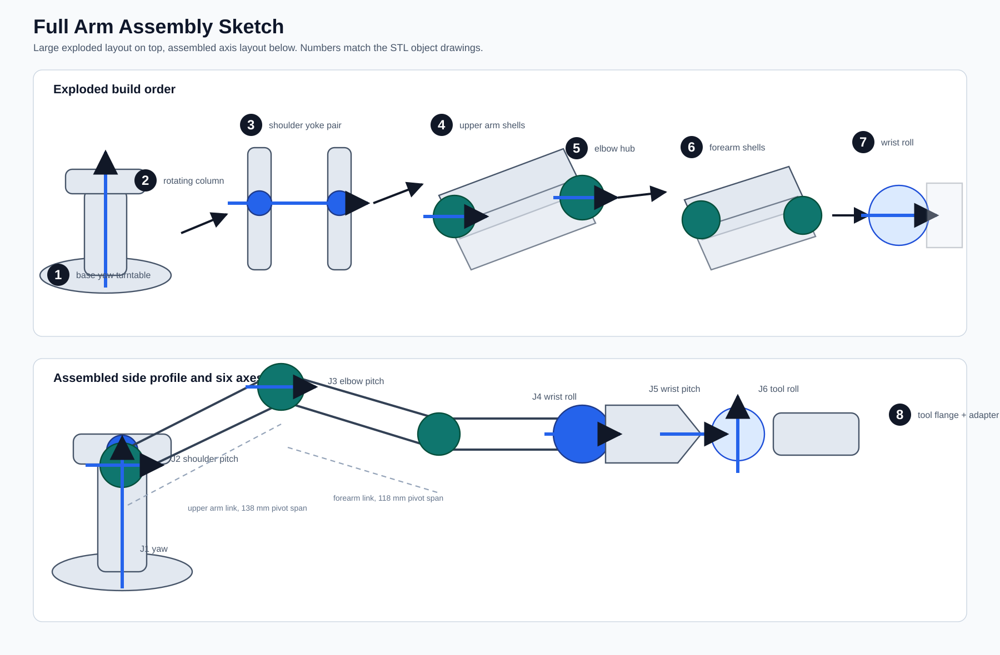
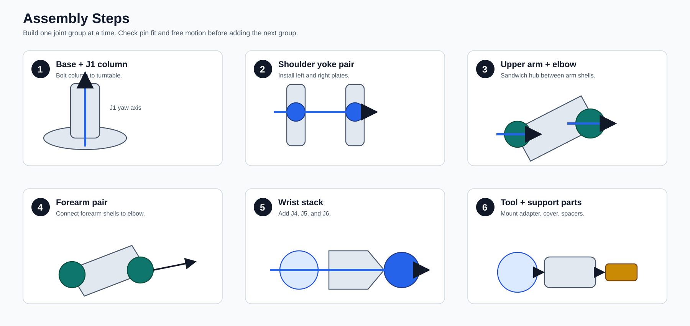
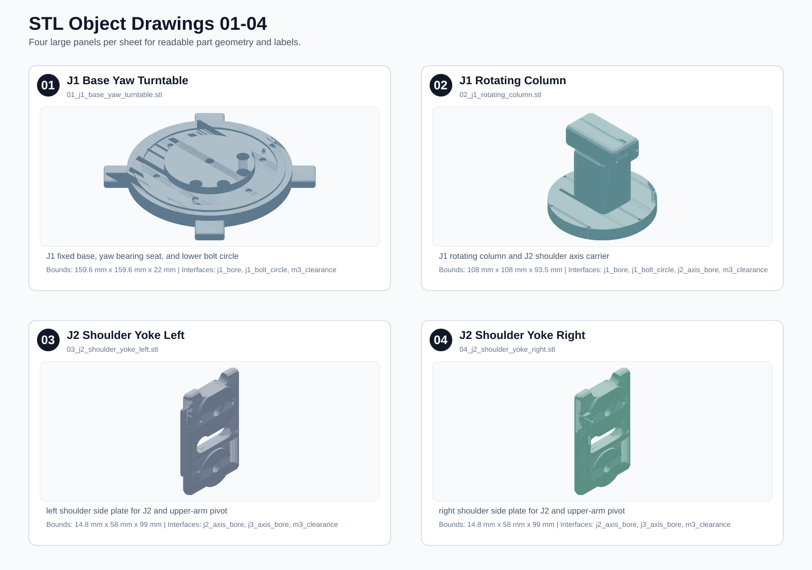
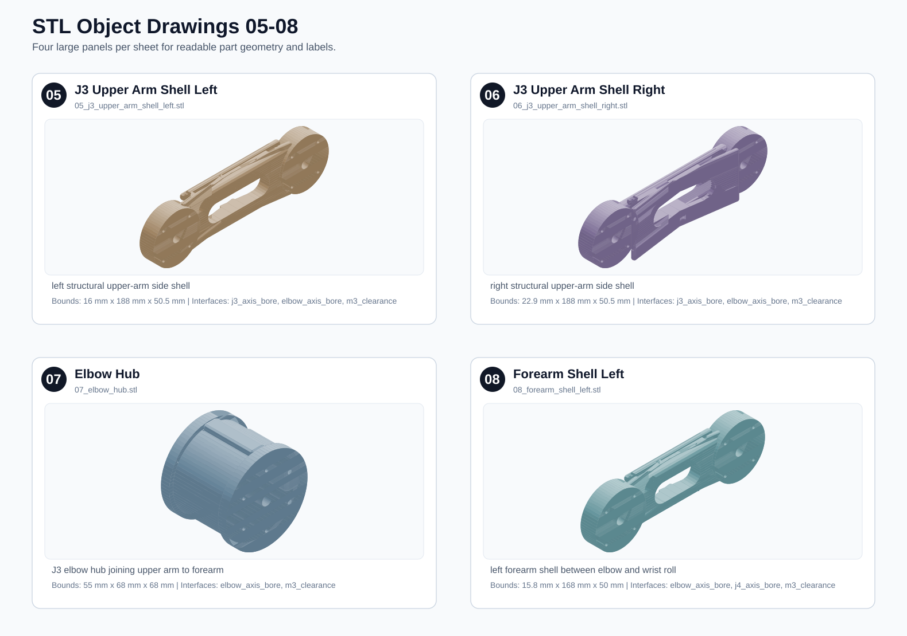
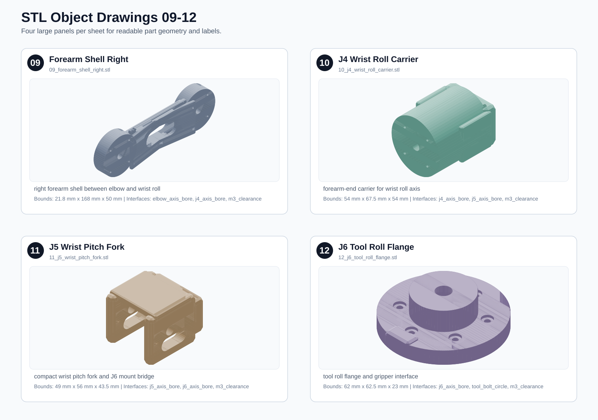
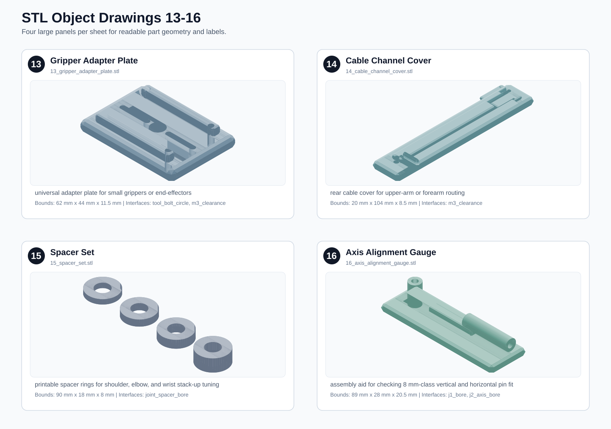

Six-Axis Arm Drawings
Clear technical drawings generated from the same original procedural solids used for the STL kit. Existing workspace STL assets are not used as drawing input.

Assembly steps
Readable Part Sheets

Part sheet 2
Part sheet 3
Part sheet 4
Individual STL Object Drawings
- 01 J1 Base Yaw TurntableJ1 fixed base, yaw bearing seat, and lower bolt circle
- 02 J1 Rotating ColumnJ1 rotating column and J2 shoulder axis carrier
- 03 J2 Shoulder Yoke Leftleft shoulder side plate for J2 and upper-arm pivot
- 04 J2 Shoulder Yoke Rightright shoulder side plate for J2 and upper-arm pivot
- 05 J3 Upper Arm Shell Leftleft structural upper-arm side shell
- 06 J3 Upper Arm Shell Rightright structural upper-arm side shell
- 07 Elbow HubJ3 elbow hub joining upper arm to forearm
- 08 Forearm Shell Leftleft forearm shell between elbow and wrist roll
- 09 Forearm Shell Rightright forearm shell between elbow and wrist roll
- 10 J4 Wrist Roll Carrierforearm-end carrier for wrist roll axis
- 11 J5 Wrist Pitch Forkcompact wrist pitch fork and J6 mount bridge
- 12 J6 Tool Roll Flangetool roll flange and gripper interface
- 13 Gripper Adapter Plateuniversal adapter plate for small grippers or end-effectors
- 14 Cable Channel Coverrear cable cover for upper-arm or forearm routing
- 15 Spacer Setprintable spacer rings for shoulder, elbow, and wrist stack-up tuning
- 16 Axis Alignment Gaugeassembly aid for checking 8 mm-class vertical and horizontal pin fit
{kind=link}
{kind=link}
{kind=link}
{kind=link}
{kind=link}
{kind=link}
{kind=link}
{kind=link}
{kind=link}
{kind=link}
{kind=link}
{kind=link}
{kind=link}
{kind=link}
{kind=link}
{kind=link}